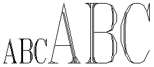

1996-02-29
En pluraj programlingvoj, (ekz-e C, ALGOL-68) fikcia nomo de datumtipo indikanta maleston de valoro (precipe por indiki ke proceduro ne liveras valoron) aŭ uzata kiam la preciza datumtipo estas nekonata («alvaka referenco»).
Angle: void
Ruse: пусто
1998-08-20
Linio kies sola enhavo estas vakua signoĉeno; do, linio formita de tujsekvaj linifiniloj. En multaj tekstaj redaktiloj vakua linio estas interalinea disigilo. Iuj traktiloj distingas vakuajn liniojn disde la blankaj linioj.
Angle:
blank line
Ruse: пустая строка
1996-02-29
En programlingvoj, senefika frazo uzata dum programverkado; vakua ordono estas anstataŭigota per senchava frazo iam poste (vd ŝtopaĵo) aŭ servas kiel interpunkcia licenco — precipe por loki markon (ekz-e la markon 13 en la Ekzemplo pri rekursia desupriĝo), aŭ punktokomon. En ALGOL-68 kaj Ada tia vakuo estas videbla (ĝin simbolas speciala ŝlosilvorto); en Paskalo ĝin indikas la malesto de ordono:
vakua_ordono = .
Angle: empty statement, dummy
statement
Ruse: пустой оператор
1996-02-29
KONST vakuaĈeno = '';
spaceto = ' ';
kaj en sintaksaj difinoj uzeblas la helpsimbolo
vakuo =.
En ĉi tiu leksikono la vakuan signoĉenon simbolas Lambdo aŭ du tujsekvaj citiloj: "".
Angle: empty
Ruse: пусто
1996-02-29
 La nombro de ĉiuj eliroj kaj eniroj de la
vertico; simetriaj eĝoj estas nombrataj
po unufoje, la maŝoj, po dufoje (unu eliro plus
unu eniro); do, la verticgrado plus la nombro de
la maŝoj ĉe la koncerna vertico. Kp problemo pri la
Konigsbergaj pontoj, loknombro.
La nombro de ĉiuj eliroj kaj eniroj de la
vertico; simetriaj eĝoj estas nombrataj
po unufoje, la maŝoj, po dufoje (unu eliro plus
unu eniro); do, la verticgrado plus la nombro de
la maŝoj ĉe la koncerna vertico. Kp problemo pri la
Konigsbergaj pontoj, loknombro.
Angle: local grade
Ruse: валентность
1996-02-29
Logika formulo estas
valida (super koncerna domajno) se ĝi akceptas
la valoron vero ĉe ajna valorizo de ĝiaj liberaj variabloj (en tiu domajno) kaj ĉe
ajna interpreto de la predikatsimboloj. Se A estas valida, oni
kutimas skribi |=A; krome,
A₁, …, An |= B signifas, ke por ajnaj valorizoj
B veras ĉiam, kiam veras ĉiuj Ai. Kp dedukti.
Angle: valid
1996-02-29
Ŝalti, aktivigi reĝimon de funkciado. Kp ebligi.
Noto. Por la angla verification and validation la Esperanta validigo neniel konvenas; vd atestado.
Angle:
enable, turn on
Ruse: включить режим
1996-02-29
Situacio, kiam la ricevata valoro (ekz-e rezulto de operacio aŭ indico de tabelo) estas ekstervarieja, situas ekster la aro de la akcepteblaj valoroj; ekz-e troo, maltroo.
Angle: range error
Germane: Bereichsüberschreitung
Ruse:
нарушение диапазона допустимых значений
1996-02-29
Variablo ricevanta valoron en valorizo; en la pliopo de la programlingvoj ĝi estas skribata maldekstre de la simbolo de valorizo. Ekz-e A[i] en A[i]:=x−B[j]
Angle: left part, destination (of an
assignment)
Ruse: получатель
1996-02-29
Tia esprimo, kia povas aperi en la pozicio de valorizato; en Paskalo, nur variablo (tuta aŭ subvariablo).
Valorizebla esprimo povas havi du liveraĵojn: la adreson (referencon) kaj la referencatan valoron, sed depende je la kunteksto oni elektas nur unu el ili. Kutime en la pozicio de valorizato oni elektas la referencon, kaj en la pozicio de aritmetika operando, la valoron; tamen per specialaj operacioj oni povas ŝanĝi tion (vd alreferencado, elreferenci, referencato).
Angle: lvalue
Ruse: именующее выражение
1999-02-20
Baza operacio de programlingvo por atribui valoron al variablo, reĝistro, elemento de tabelo ktp. En Paskalo:
valorizo = valorizato ":=" fonto. valorizato = variablo | funkcinomo. fonto = esprimo.
Noto. La frazon a:=b+1 legu «a estu bo plus unu» aŭ «a ricevas la valoron bo plus unu».
Angle: assignment
Germane: Zuweisung, Wertzuweisung
France: affectation
Ruse: присвоение,
присваивание
1996-02-29
En programlingvoj, elemento de datumtipo indikata de variablo, konstanto aŭ esprimo; oni diras, ke variablo havas valoron aŭ ke esprimo liveras valoron; simile, en la memoro ĉelo enhavas valoron. Kp kuranta, valorizo.
Angle: value
Ruse: значение
1996-02-29
Pasiggrupo de formalparametra listo en Paskalo, preskribanta por la koncernaj parametroj pasigon per valoro:
valorparametra_specifo =
nomlisto ":" (tipnomo|konformiva_tabelskemo).
Angle: value parameter specification
Ruse:
спецификация параметра-значения
1996-02-29
Programa objekto kiu havas nomon kaj valoron, kiun lastan la programo povas atingi kaj ŝanĝi. En Paskalo variablo estas speco de esprimo; nur variablo povas esti valorizato aŭ fakta parametro ĉe pasigo per referenco.
variablo = tuta_variablo | subvariablo | referencato | bufro.
Angle: variable
Ruse: переменная
1996-02-29
En programlingvoj, deklaro kiu enkondukas nomon (aŭ tutan grupon da nomoj) estkiel variablosimbolojn, kaj eventuale atribuas al ĝi (al ili) datumtipon, komencan valoron ktp. En Paskalo,
variablodeklaro = nomlisto ":" datumtipo.
Angle:
variable declaration
Ruse: описание переменной
1996-02-29
Pasiggrupo de formalparametra listo en Paskalo, preskribanta por la koncernaj parametroj pasigon per referenco:
variabloparametra_specifo =
"VAR" nomlisto ":" (tipnomo | konformiva_tabelskemo).
Angle: variable parameter specification
Ruse:
спецификация параметра-переменной
1996-02-29
{ y | (∃u,v,…,w) [ 〈u,v,…,w,y〉∈R ] };
Angle: range, codomain
France: gamme, plage
Germane: Bereich
Ruse: отрезок,
диапазон, область определения; образ
1996-02-29
Variablo, dosiero aŭ alia memoro kies enhavo povas ŝanĝiĝi sekve de ekstera evento (ekz-e se la variablo fakte estas pordo) aŭ de kromefiko. Variemajn objektojn endas speciale atenti ĉe optimigaj transformoj.
Angle: volatile
Germane: veränderbar, volatil
Ruse:
изменчивый
1998-11-02
Kodo ĵetanta samlongajn kodataĵojn en diverslongajn kodantaĵojn, kutime depende je iuj ecoj de la kodataj signoj — ekz-e tiel, ke la plej oftaj signoj havu la plej mallongajn kodonojn (en la kodoprezentoj kia UTF-8 ktp).
Angle: variable-length code
1996-02-29
Ω Startigo de komputa sistemo sen ties malŝalto kaj memorviŝo. Kp malvarma reŝargo.
Angle: warm restart, warm reboot, soft restart
France: restart [redémarrage] à chaud
Ruse:
перезапуск из памяти
1996-02-29
«Objekto, fabrikita por vendado; artiklo de komerco» [PIV1]. En komputado -varo uzeblas por nomi pli-malpli komercan komputilsisteman produkton, destinitan por funkcii en la agado indikita per la antaŭanta vortoparto: grupvaro, kontorvaro, ludvaro ktp; sed ankaŭ kulpovaro.
Noto. PIV1 ofertas ankoraŭ hardvaron (= aparataro) kaj softvaron (= programaro), ial lokante ilin sub «varo», kvazaŭ regulajn derivaĵojn el soft- kaj hard-. Tio estas nelogika kaj evitinda.
Angle: ware, support
1996-10-18
Kompleta aro da agoj necesaj por pluigi kajaŭ pririĉigi la funkciivon de programaro. Vartado konsistas en provado, korektado de malkovrataj eraroj, adaptado al novaj aplikoj (nova medio, ŝanĝitaj funkcioj ktp). Por la aparataro simila agado estas flegado.
Angle: maintenance
Germane: Wartung
Ruse: сопровождение
1996-02-29
Tia grafiko, ke la bildo estas prezentata per aro da strekoj, «vektoroj». Kp rastruma grafiko, komposta grafiko.
Angle: vector
graphics
Ruse: векторная графика
1996-02-29
Komuta adicia
grupo (ĝiaj anoj nomiĝas vektoroj), por kiu
estas difinita multipliko per anoj de komuta korpo K (la skalaroj) estas «vektora spaco super
K». Kutime K=ℝ aŭ K=ℂ. Ekz-e Eŭklida spaco, Hermita spaco.
Angle: vector space,
linear space
Ruse: векторное пространство,
линейное пространство
1998-08-17

 Maniero difini tiparon per aro da strekoj («vektoroj»), kiuj dense plenigas la internan areon de la signobildoj. Tiaj tiparoj estas uzataj por eligo per desegnilo, en komputilizita projektado. La vektoraj tiparoj ne bezonas rastrumigilon, kaj ebligas pli multajn transformojn, ol la rastrumaj tiparoj, kvankam la rezulto povas esti malpli bona, ol ĉe kontura tiparo.
Angle: vectored font
Ruse: штриховой
шрифт, векторный шрифт
1996-02-29
Unudimensia tabelo.
Angle: vector
Ruse: вектор
1996-02-29
Grafika ekranbloko, en kiu la kineskopa fasko desegnas la bildliniojn laŭ ordo difinita de la programo.
Angle: vector-mode display, directed-beam display
Ruse:
векторный дисплей
1996-02-29
Vinjeto prezentanta malserenan mienon, simbolo de tragedio aŭ dramo, mienvinjeto esprimanta melankolion, bedaŭron, koleron; iam disponebla estkiel aparta signo, en Askio imitata per :-( En Unikodo disponeblas ĉe 16u2639.
Angle: frowney face
1996-02-29
Tiu
edro de prestipo, kies rando situas ĉe la
malsupro de la signobildo. Kp dorso.
Angle: belly
Ruse:
нижняя стенка литеры
1996-11-05
Tekstotraktilo disponiganta rimedojn por
oportuna verkado de diversaj tekstoj, i.a. tekstan redaktilon, literumilon, aŭtomatan kompiladon de indekso,
enhavtabelo, diversaj referencoj ktp. Ekz-e Ĉapelilo.
Angle: word processor
Ruse: система подготовки текстов,
текстовый процессор
1996-02-29
Angle: true
France: vrai
Germane: wahr
Ruse: истина
1996-02-29
Angle: version
Ruse:
версия
1996-02-29
Parto de programara metiejo, programaj kaj administraj rimedoj por krei, registri kaj trakti plurajn, eventuale paralelajn, versiojn aŭ eldonojn de programaro, kutime uzante nur po unu ekzempleron de la senŝanĝaj partoj de koncernaj dosieroj.
Versitenaj sistemoj konservas la ŝanĝoregistron (kiam kaj kiu kreis version, ŝanĝopriskribo), ebligante revizii la ŝanĝojn kaj rekonstrui pli fruajn versiojn.
Emakso kapablas labori kun 3 versitenaj sistemoj: RCS, CVS kaj SCCS.
Angle: version control system, code management system
1998-03-17
Maniero difini Bulean funkcion per tabelo, kies ĉeloj entenas la rezulton de la funkcio por la kombinaĵo de la argumentoj, egala al la koordinatoj de la ĉelo.

Angle: truth table
France: table de vérité
Germane: Wahrheitstabelle, Wahrheitswerttafel
Ruse:
таблица истинности
1996-11-02
En grafeo, la nombro de la eĝoj incidaj al koncerna vertico. En direkta
grafeo estas distingataj enira duongrado kaj elira
duongrado, t.e. la nombro de la eĝoj irantaj al — resp. el — la
koncerna vertico. Kp valento.
Angle: degree, local grade
1996-02-29
Elemento
de grafeo, kutime bildigata per punkto, rondeto
aŭ ortogramo. Kp nodo, folio, eĝo.
Rim. Laŭ PIV1,
- (Pri plurlatero:) La sekcopunkto de la du sinsekvaj lateroj en la dulatero.
- (Pri angulo:) La sekcopunkto de la du lateroj de la angulo.
- (Pri pluredro:) Sekcopunkto de eĝoj de la pluredro.
Angle: vertex, node
Ruse: вершина, узел
1996-02-29
Tia aranĝo de printaĵo, ke la pli longa rando de la paĝo
estas vertikala. Kp horizontala
formato.
Angle: portrait
France: format vertical
Germane: Hochformat
Ruse: книжная
ориентация
1996-02-29
La signo | (la Askia kodono 124); ofte bildigata per rompita vertikala rekto; ĵargone iam nomata masto, paliso. En sintaksaj reguloj (laŭ la formo de Backus—Naur) ĝi kutime disigas alternativojn; en multaj programlingvoj (ekz-e, C) ĝi prezentas aŭon; en operaciumaj komandoj, dukton; en matematiko ĝi simbolas divideblon (vd divizoro). Vd referencilo.
Angle: vertical bar
France: barre verticale
Ruse: вертикальная
черта
1996-09-26
a: TABELO [1..m,1..n] EL subtipo
estas m-opo de la matricanoj kies dua indico egalas al k:
(a[1,k], a[2,k], …, a[m,k])
Angle: column
Ruse: столбец, колонка
1996-02-29
Ekrana adaptilo por personaj komputiloj kongruaj kun IBM-PC. VGA kongruas kun EGA, kaj nia esperantiga programeto (Ŝargo de EGA-signogenerilo) taŭgas ankaŭ por ĝi.
Estas diversaj pluaj modifaĵoj de la sama adaptila arkitekturo (SVGA, XGA).
Noto. De la angla Video Graphics Adapter, t.e. «Video-Grafika Adaptilo».
1996-02-29
Dukorno,
angula, kojnoforma hoketo (la supersigno en formo
de v). En Teĥo esprimata per \v,
ekz-e ha\'a{\v c}ek.
Angle: hácek, caron
Ĉeĥe: háĉek
Ruse: гачек, галочка
1996-02-29
 Aranĝi atendovicon al risurco, i.a. al la ĉefprocesoro (vicigi komandojn, taskojn).
Kp disciplino, karuselo, vicigilo; operaciesploro.
Aranĝi atendovicon al risurco, i.a. al la ĉefprocesoro (vicigi komandojn, taskojn).
Kp disciplino, karuselo, vicigilo; operaciesploro.
Angle: schedule
Ruse: планировать
1999-12-11
Ω Programo (parto de operaciumo) viciganta mendojn de la taskoj pri diversaj risurcoj.
Angle: scheduler
Ruse: планировщик
1999-12-11
☇ Pila kurentofonto, provizanta nutradon al la komputilo en okazo de eventuala paneo de la regula energifonto, por ebligi sekuran malŝalton de la komputa sistemo.
Angle: UPS,
Uninterruptible Power Supply
Ruse: источник
бесперебойного (аварийного) питания
2002-11-20
1996-02-29
Risurco uzebla ĉe eventuala paneo de la normale uzata ĉefrisurco aŭ difektiĝo de datumo en dosiero (vd restaŭrkopio).
Angle: backup
Ruse: резерв
1996-02-29
Ajna signo havanta norman grafikan formon, akcepteblan por datumregistriloj; signo kies printado rezultas en iaspeca desegnaĵo (signobildo), kontraste al la stirsignoj, kiuj povas influi la aranĝon de la informoj, sed per si mem ne estas videblaj. Kp informsigno, grafika signo, speciala signo.
Rim. Tamen spaceton oni ĝenerale rigardas videbla signo; kp nerompebla spaceto, kuvo; eventuala streketo.
Angle: graphic character, printable character,
printing character, visible character
Ruse: зримая
литера, печатная литера
1996-02-29
«Internacia prefikso rilata al ĉio, kio registras, transdonas kaj reproduktas bildojn kaj sonojn per elektronika procedo: videoamplifilo, videobendo, videodisko» [SPIV], ankaŭ videoteĥniko, videokasedo, videofilmo ktp.
Noto. [PMEG] rekomendas:
Estas pli bone uzi la radikon vide, per kiu oni povas fari ekz-e: «video» (atentu pri la akcento: «vidéo»), «videa», «videilo», «vide(o)tekniko», «vide(o)kasedo», «vide(o)bendo», «vide(o)magnetofono», «vide(o)filmo». La ligfinaĵo O estas fakte ĉiam superflua, se temas pri la radiko vide. Se temas pri la prefikso video, la «o» estas parto de la prefikso, kaj ne povas forfali. En nefaka lingvaĵo oni povas ofte uzi vid: «vidbendo», «vidkasedo». Komparu kun aŭdi(o).
Angle: video
Ruse: видео
1996-02-29
Parto de la ĉefmemoro, atingebla por du diversaj organoj, tiel ke la ekrana bildigo okazas samtempe kun la ŝanĝo de la datumoj en la memoro.
Angle: VRAM, video RAM
Ruse:
видеопамять
1996-10-13
Elkomputiligi datumon, prezenti ĝin en videbla formo: surekranigi, printi.
Angle: display
France: afficher
Germane: anzeigen, sichtbar machen; darstellen
Ruse:
отображать, изображать
1996-02-29
Angle: display; viewer
2000-01-26
La plej simpla kaj malplej rendimenta sinkronigilo, konsistanta el senutila iteraciado.
Angle: busy wait
1996-02-29
Angle: wiki
2005-08-06
♖ La unua modelo de moderna diskaparato.
Noto. La nomo devenas de la loko, kie unua tia disko estis konstruita: filio de IBM en Winchester (Britujo), kajaŭ de la amuza koincido kun la fama «Vinĉestra fusilo»: la enkonstruita disko de la prototipo (1973) de tio, kio poste iĝis IBM 3340, havis du logikajn datumportilojn po 30 Mbajt, kaj tio pensigis pri «30–30», la ĵargona nomo de la fusilo (temanta pri la kalibro 30 kaj pri la ŝargopezo 30 granoj) [JF].
Angle: Winchester disk; hard disk
Ruse:
винчестер, жёсткий диск
1998-12-17
Esperantigita nomo de Windows.
Noto. Simono Pejno skribis en s.c.e. (1995-09-17):
Eble interesas tio, kial mi persone ne skribas «Fenestroj», ja la vortecan tradukon el la Angla.Nu fakte, tiu Angla produktonomo Windows kaŭzas malgrandan dilemon por Esperanto. En la angla oni povas apliki substantivojn adjektive per simpla apozicio. Ekz-e «Windows compatibility». Ĉe tio tute ne ĝenas ebla pluraleco de la adjektivigotaĵo. En Esperanto oni evidente ne povas fari la frazon «Fenestroj-a kongrueco». Je la plua ŝtupo: Windows compatibilty issues, oni tradukante devus tute reformuli la aferon al io simila al «gravaj temeroj rilate la kongruecon de Fenestroj». Aldone oni konsideru, ke la Angla gramatike plurala termino fakte uziĝas ununombre, kiel speco de kolektivo aŭ nevariigebla tuto. Ankaŭ la ebla termino «Fenestraro» ne tute kontentigas, ĉar tiu koncepto de areco iel malestas en la originalo.
Ĉiuj ĉi pripensoj kondukis al la iom aŭdaca esperantigo «Vindoz/o».
Evidente per tiu oni povas skribi: Vindozo, Vindoza, Vindozaĵo, Vindozulo, Vindoze kongrua, Vindozkongrua, Vindozliveranto, Vindoze ktp (…)
Tamen tute aparte de tiuj logikaj tialoj la kvazaŭsufikso «-oz» ŝajnas al multaj komputilistoj tre konvena rilate al Vindozo ☺.
Angle: Windows { ☺ Windoze, Microsloth Windows }
Ruse: Винды
1996-02-29
Tipografia signo, uzata por ornami dokumenton. Estas tutaj tiparoj da tiaj vinjetoj, ekz-e Zapf
Dingbats. Ekz-e la mienvinjetoj, la
faksimboloj en PIV1, diversaj simboloj astrologiaj, montraj fingroj,
ludkartaj emblemoj. En Unikodo multaj vinjetoj
haveblas sur la kodpaĝo 16u2600.
Iam ankaŭ la signojn bulo, paragrafo, ponardo ktp oni rigardas vinjetoj.
Angle: dingbat
Ruse:
декоративный элемент
1997-06-24
Laŭ PIV1,
Do, Askie 123 kaj 125.
Angle: brace
France: accolade
Ruse: фигурная скобка
1996-02-29
Kiu ne havas fizikan realigon aŭ kiu estas imagata alie ol ĝi estas realigita. Vd logika.
Angle: virtual
Ruse: виртуальный
1996-02-29
La adreso de ĉelo de virtuala memoro; adreso de virtuala objekto; kp fizika adreso.
Angle: virtual
address
Ruse: виртуальный адрес
1996-02-29
Logika disponaĵo, kun kiu programo interagas kiel kun disko, de kiu eventuale povas esti realigita (ekz-e) per parto de ĉefmemoro aŭ per magneta rubando.
Angle:
virtual disk
Ruse: виртуальный диск,
псевдодиск
1999-03-18
Angle: virtual machine
Ruse: виртуальная
машина
1996-02-29
Operaciuma procedo ebliganta al programo uzi memoron pli ampleksan ol la fizika ĉefmemoro de la komputilo. La fizika memoro estas dividata en pecojn fikslongajn (paĝojn) aŭ varilongajn (segmentojn). En la fizika ĉefmemoro situas la nune uzataj datumoj kaj komandoj, kiuj konstituas la laborareon de tasko. La virtualajn adresojn, uzatajn en programo, la operaciumo ŝanĝas en la respondajn fizikajn laŭ paĝotabelo aŭ segmentotabelo. Se koncerna virtuala adreso mankas en la laborareo, estiĝas interrompo kaj la bezonata paĝo aŭ segmento estas legataj el la ekstera memoro; kutime tio neprigas malokupon de memorpeco en la fizika ĉefmemoro: la operaciumo trovas malaktualan paĝon aŭ konvenan segmenton (kutime oni serĉas la plej longe neuzitan), kopias ĝin en la eksteran memoron (se ĝi ŝanĝiĝis post sia lasta lego) kaj sur la liberigitan lokon legas la mankaĵon (kun ĝisdatigo de la tabeloj). Vd memoradministrado.
Angle:
virtual storage
Ruse: виртуальная память
1996-02-29
Kompleksa simulilo surbaze de plurmedio, generanta tridimensiajn bildojn de modela «mondo», manipulebla de la uzulo, kies situon kaj movojn registras la sentiloj de la simulilo.
Artikolo de M. Weichert el «Esperanto»: http://www.esperanto.net/martin.weichert/virtuala.html.
Angle:
virtual reality
Ruse: виртуальная реальность
1996-02-29
Sekvenco da perturbaj komandoj, intence metitaj en ies programon aŭ operaciumon, kiu kopias sin mem kaj aldonas la kopion al aliaj programoj, tiel «infektante» ilin kaj farante ilin Troja ĉevalo. Iuj (la mildaj) virusoj faras nenion krom sin multobligi, la aliaj havas tre detruajn efikojn, ekz-e difektas dosierojn sur la disko.
Pro disvastigo de virusoj la produktado de senvirusigiloj iĝis grava branĉo de la kompudada industrio.
Noto. Pro evidenta analogio kun la biologiaj virusoj.
Lit. Deák Jahn G. Virusoj en komputiloj! // Fokuso. 1988. N-ro 8 (4). P. 30–34.
Angle: (soft)virus
Ruse:
вирус
1996-02-29
Speco de lumdisko, kies datumojn eblas forviŝi por skribi novajn, simile al la operacioj super magneta disko. Tia disko povas havi terabajtan kapaciton kaj ofte bezonas specialan lumdiskingon.
Angle: erasable
optical disc, floptical disc, CD-E, CD-RW
Ruse:
перезаписываемый оптический диск, гибкий
оптический диск
1996-10-14
Nurlegebla memoro, kies enhavon eblas ŝanĝadi forviŝante la malnovajn datumojn per transviola radiado aŭ elektre, kaj registrante la novajn per speciala aparato, programilo.
Angle: EPROM (erasable programmable read-only memory)
1996-02-29
Fari datum(an)on (dosieron, tekstopecon, registraĵon) logike aŭ fizike neatingebla; mal-konservi.
Angle: erase, delete, zap
Ruse: стереть
1996-02-29
Emaksa speco de poŝo: la viŝitaj tekstopecoj konserviĝas en ringa listo, kaj la uzulo povas elekti, kiun viŝitaĵon elpoŝigi.
Angle: kill list
Ruse: кольцо удалений
1999-03-21
En Askio, la stirsigno 127, malvalidiganta (viŝanta) la ĵusantaŭan signon.
Angle: DEL, delete, erase character
France: symbole d'effacement
Germane: Löschzeichen
Pole: kasowanie
Ruse: литера стирания
1996-02-29
Metodo de testado ĉe kiu la aŭtoro de la testoj, sciante la programtekston de la realigo, verkas testojn kiuj kontrolas ĉiujn ĝiajn branĉojn. Kp nigraskatola testado.
Angle: clear box testing, open box testing, structural testing, white box testing
2005-05-19
Sekvenco da programarkonstruadaj paŝoj kaj koncernaj entoj:
| Aĵoj | Adoj |
|---|---|
| (problemo) | |
| problemanalizo | |
| postulspecifo | |
| teĥnika projektado | |
| teĥnika projekto | |
| realigo | |
| dokumentita programo | |
| kontrolo (testado, atestado) | |
| modifita programo | |
| instalo, akceptotestado | |
| postulkonforma programo | |
| vartado |
La evoluigo de programaro plej ofte okazas iteracie; oni proponis plurajn modelojn (akvofalan, spiralan) por priskribi tiun procezon.
Angle:
software life-cycle
Germane: Software Lebenszyklus
Ruse:
жизненный цикл программного обеспечения
1996-11-27
Tiu periodo de programplenumo, dum kiu ekzemplero de programobjekto (ekz-e generacio de variablo) estas uzebla kaj senchava (kutime, ekde ĝia kreo ĝis ĝia detruo). Kiam la stirado forlasas la regionon de la objektonomo, la objekto povas iĝi neatingebla sen ĉesi ekzisti.
Angle: life time
Germane: Lebensdauer
Ruse: время жизни,
область существования
1996-02-29
 Kapablo de sistemo daŭre plenumi siajn
utilajn funkciojn, sen ekz-e klinĉo, sen pendi ktp.
Kapablo de sistemo daŭre plenumi siajn
utilajn funkciojn, sen ekz-e klinĉo, sen pendi ktp.
Angle: liveness
Ruse: живучесть
1996-02-29
Finia sekvenco da eĝoj tia, ke ĉiuj tujsekvaj eĝoj estas najbaraj. Notante ankaŭ la verticojn, al kiuj estas incidaj la eĝoj, oni simbole skribas
v₀ e₁ v₁ e₂ v₂ … vn−1 en vn
(n≥0); n estas la longo de la vojo, v₀ estas ĝia komenco kaj vn, ĝia fino. Vojo estas orientita, se ĝi konsistas el direktaj eĝoj trapasataj laŭdirekte. Vd ĉeno, ciklo.
Angle: path
Ruse: путь
1996-02-29
Ω En programado por hierarkia dosiersistemo, tiu parto de de dosierindiko kiu indikas la plenan nomon de la dosierujo en kiu situas la koncerna dosiero. Ĝi estas la sekvenco de la dosierujoj kiujn necesas trapasi ĝis la celata dosiero elirante el la kuranta aŭ el la radika dosierujo (relativa kaj absoluta dosierindikoj). Vd dosiernomo, nombazo.
Angle: path prefix
Ruse: путь 2000-08-17
Frazo ebliganta plenumon de nomhava subprogramo; (procedur-, funkcivoko): parametropasigo kaj salto al proceduro (aŭ funkcio) kiu plenumas siajn agojn kaj redonas la stiradon al la vokinta programo. Krome, funkcio liveras malimplican rezulton.
Makroovoko: makrokomando.
Angle: call
Ruse: вызов
1996-02-29
Sekvenco de komandoj, uzata en koncerna programada sistemo por voki proceduron kaj por parametropasigo.
Angle: calling sequence, calling convention
1996-02-29
Prezento de teksto en malĝusta signaro, ekz-e kiam teksto en Cirila alfabeto estas surekranigita per la Latina-1a (per sensencaj latinaj diakritaĵoj), aŭ kiam eĥoŝanĝo ĉiuĵaŭde aperas kiel e¶oþanøo æiu¼aýde. Kp kojnaĵo.
Angle: greeking (??)
Ruse: кракозябры
2002-12-23
En iuj redaktiloj (ekz-e vim, Emakso), speco de skeleta prezento. En Emakso eblas limigi la redaktojn (ekz-e la kuntekstajn ŝanĝojn) je kuranta malvolvita parto de la teksto. En vim la volvadon oni regas per la z-komandoj (zo, zf, zc ktp).
Angle: folding
2005-05-08
Angle: VP; WP
1996-02-29
Angle: word
Ruse: слово
1996-02-29
En teksto, kiam fine de linio oni povas loki nur parton de vorto, oni ofte ĝin dispartigas inter du (aŭ pluraj)
tujsekvaj linioj. Streketo post la unua parto
fine de la unua linio indikas, ke la vorto estas daŭrigota en la sekva
linio. Se la vorto jam entenas streketon — ekz-e en
iu angla-rusa vortaro
— oni volonte tranĉas ĝin tuj post la streketo; tiam oni povas ripeti la streketon komence de la sekva linio:
… iu angla-
-rusa vortaro
Bedaŭrinde tiu racia maniero maloftas en la presitaj tekstoj.
Lit. PEJNO Simono. Dividaj dilemoj // Monato. 1995. N-ro 9.
Angle: hyphenation
France: césure
Ruse: перенос
1996-02-29
En programada lingvo, litercifera simbolo, precipe speciala signo (ekz-e FINO, SE) — ekz-e vd la tabelon da tiaj simboloj por Paskalo (Ŝlosilvortoj de Pascal kaj Paskalo). Kp ŝlosilvorto, rezervita nomo.
Simila esperantigo estas facile realigebla por C Leksiko de C).
Angle: word symbol
1996-02-29
Nulo situanta dekstre de la lasta nenula cifero de la ona parto de numeralo, ekz-e en 1.20; kp nesignifa cifero.
Angle:
trailing zero
Ruse: конечные нули
1996-02-29
Spaceto situanta fine de linio, sekvate de neniu signo alia ol spaceto.
Angle: trailing
space, trailing blank
Ruse: конечные пробелы
1996-02-29
Rim. ♖ En la Karolida minuskla skribo (10a jc) tiu subsigno estis uzata en la «vosthava e» (latine: e caudata), kiu estis formo de la ligaturo æ.
Noto. La pola vorto signifas «vosteto», same kiel la Latina nomo. Kp vosto.
Vd Polska strona ogonkowa (t.e. «Pola paĝo vosteta»).
Angle: ogonek
Pole: ogonek
Ruse: хвостик
1996-10-09
Elemento de litera signobildo, pendanta suben kaj dekstren; ekz-e
en Q, K. Kp vosteto.
Angle: tail
1996-11-04
Vd viŝebla programebla nurlegebla memoro.
1996-02-29
Nomo de
la ne-Esperanta litero W, kiun la plimulto rigardas duobla vo,
sed kiun la anglalingvanoj nomas «duobla u»; kombinante la du nomojn oni
ricevas la polan, kiu cetere similas la nomon de aliaj ne-Esperantaj literoj,
ekz-e kuo (en kiu nomo u respondas al simila
v/w-sono, kp akVo), mu(o). Kun tia liternomo
oni povus, ekz-e, voĉlegi la siglon WWW kiel
vu-vu-vuo aŭ tri vuoj ktp. Vd vopo.
Rim. G. Waringhien proponis ankaŭ la nomon vavo, sed ĉi tiu estas nomo de hebrea litero, kies grafika formo tute malsimilas ol W. Eĉ pli kurioze, la jida havas literon «duobla vavo» («cvej vovn», Unikode 16u05F2).
Angle: double u
France: double vé
Pole: wu
Ruse: дубль-вэ
1996-02-29